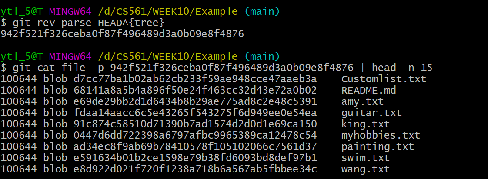
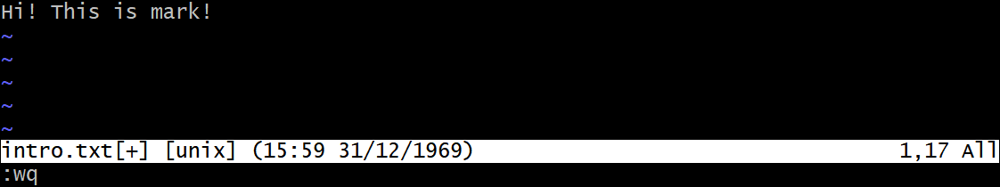
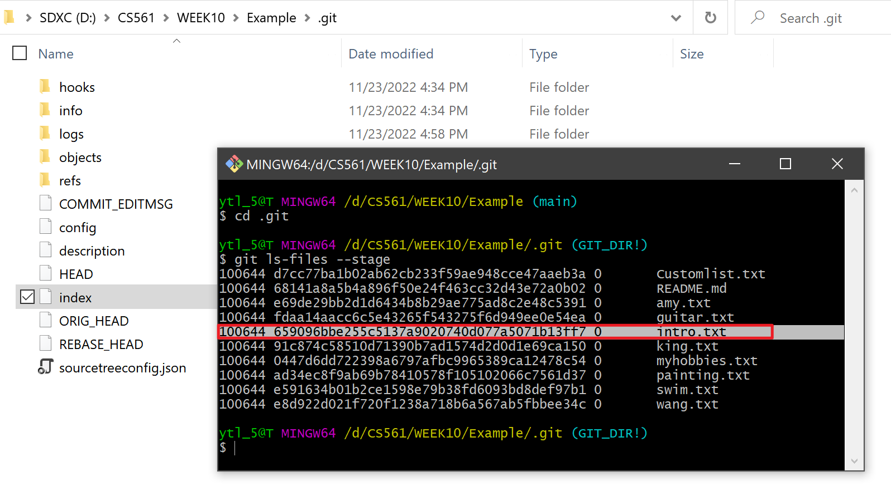
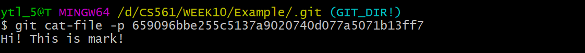
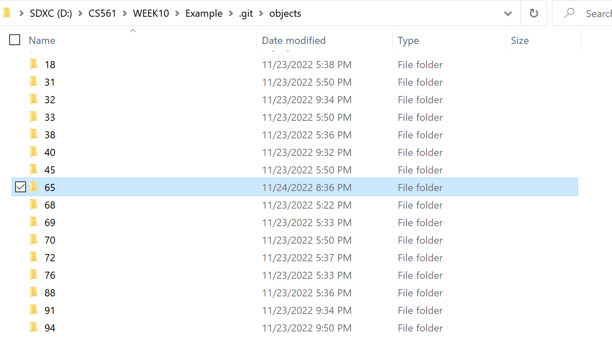
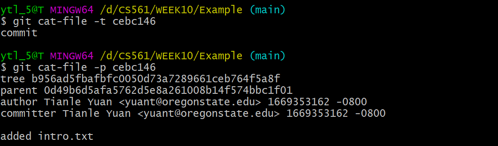

Git Theory⚓︎
When you are first using Git, you must feel confused about the questions shown below
Question
- How does Git help us do version control?
- What is
commitessentially?- What is
branchessentially?- What is
diffessentially?- Does
committingequalpatching?- What is
rebaseessentially?I hope this section can help you to understand Git behaviors deeply.

Git objects⚓︎
Git repository is constructed by Git objects. Git references each object by using their object ID (OID for short).
Note
Git objects has three types: blob, tree, and commit. They have below functions:
-
blobfile contents -
treedirectory listings -
commitsnapshots
Commands and commit history that we will use
-
The command that we can retrieve the
OIDofGit objects:git rev-parse <ref>-
<ref>will be the parameters below:HEAD: the currently checked-out branch's latest commit.HEAD^{tree}: the root tree of the currently checked-out branch's latest commit.HEAD:<file path>: the file content at the moment of the currently checked-out branch's latest commit.
-
-
The command that we decrypt the
OIDSHA-1 hash into plain-text files:git rev-parse <ref> -
In the commit history, please focus on the commit hash:
Git file content storage: blob⚓︎
blobs contain file contents.
Let's use the command lines:
git rev-parse HEAD:README.md and git cat-file -p <OID> | head -n 8
The contents at HEAD:README.md matches the README.md file contents in the current working directory:

Git directory: tree⚓︎
We should notice that blobs only contain file contents. However, trees record files' names and their directories. The concept can be seen in the graph as shown below:

Let's use the command lines:
git rev-parse HEAD^{tree} and git cat-file -p <OID> | head -n 15As shown below, a tree is an ordered column list of: file modes, paired with object types, the OID, and path entries for the object at that path.

Reminding
The objects shown in the list are all blobs. But the objects can also be trees. When some objects in the tree are trees, they are subdirectories.
Trees can point to other trees! 😎
Git history snapshot: commit⚓︎
The tree itself doesn’t know where it exists within the repository; that is the role of the objects pointing to the tree. The object role is the commit!
To understand the commit more straightforward, firstly, let's use the command lines:
git rev-parse HEAD and git cat-file -p <OID>
Combining the concept map below, each commit contains:
- A pointer to its root tree, representing the state of the working directory at that time.
- A list of parent commits corresponding to the previous snapshots (commits). A commit with no parents is a root commit, and a commit with multiple parents is a merge commit.
- Metadata describing the snapshot. Such as:
- Author and committer's name, email address, and date
- A commit message. The commit message is an opportunity for the commit author to describe the purpose of that commit with respect to the parents.

All in all, we call commit a snapshot in time. Remember the commit history from Sourcetree. The snapshot is a "slice" of your local repo at some node point in time. Snapshot is to a repository, as a screenshot is to a video.
Git branch⚓︎
In Git, we use branches as pointers to the commits to move around the Git history and make changes instead of directly referring to OIDs most of the time.
In other words, the branch file contains the OID of a commit.
Don't believe me? Let's see what is a main branch in the working directory: .git/refs/heads:
| Directory |  |
|---|---|
| Sourcetree |
Familiar with the OID 0d49b6d5afa5762d5e8a261008b14f574bbc1f01? Check the OID shown in the terminal of Git history snapshot: commit!
Yes, right now main branch points to the same OID that HEAD points to:

Tip
Branches are significantly different from Git objects we talked before:
Commits,trees, andblobsCANNOT change their contents once created (immutable).-
Branchescan be moved to track a specific commit branch (like the "tail" of thelink list).- E.g: if we update the current branch by creating new commits, both
HEADand the branchmainwill update to point to that new commit!
- E.g: if we update the current branch by creating new commits, both
Big graph⚓︎
From what we have learned from Git objects and Git branchs, we can treat the local repo as the objects diagram shown below:

Hierarchy
- branches commits
- commits other commits their root trees
- trees other trees blobs
- blobs
 nothing.
nothing.
Important conclusions
- Time moves from left to right.
- Commit dependencies are from right to left.
- Each commit has a single root tree.
- Same blobs are reachable from multiple root trees.
- Since these trees reference trees and blobs by their OID, these snapshots DON'T need multiple copies. of the same data.
Git diff⚓︎
So far, we know that Git stores series of
commits. But why doesn't Git store data as a series of changesets or differences? In fact, sometimes thecommitsuse the function of thediff, but not all the time.
According to Derrick Stolee's favorite analogies, think of commits as having a wave/partical duality in physics, where sometimes they are treated like snapshots and other times they are treated like diffs. Simply, we can have following formula:
So, what is the diff?
The diff is dynamically generated from the snapshot data (blobs) by comparing the root trees of the commit and its parent.
Git can compare ANY two snapshots in time, not just adjacent commits. The comparison starts with the root trees, which are always different. The Git performs a depth-first-search (DFS) on the subtrees by following pairs when paths for the current tree have different OIDs.
Take the diagram as an example shown below:

Let's do DFS following pairs!
-
The root trees have different values for the
docs, so we recurse into those two trees.-
Those trees have different values for
M.md:- so those two
blobsare compared line-by-line; - and that
diffis shown.
- so those two
-
Still, within
docs,N.mdis the same, so that is skipped, and we pop back to the root tree.
-
-
The root tree then sees that the things directories have equal OIDs as well as the
README.mdentries.
In the diagram above, we notice that the things tree is never visited, and so none of its reachable objects are visited. This way, the cost of computing a diff is relative to the number of paths with different content.
Notice!  commit, ❌ patch
commit, ❌ patch
With commit, parent information, including differences, has been stored. That's why Git does not choose the patch as the functional implementation.
Patch only implements the diff part but cannot traverse commit history. Snapshots record the commit history in time.
Two commands implementing diff⚓︎
git cherry-pick⚓︎
-
Brief description: A commit is accidentally made to the wrong branch. You can switch to the correct branch (now it is
HEADbranch) andcherry-pickthe commit to where it should belong in thisHEADbranch. -
Technical details: The
git cherry-pick <OID>command creates a new commit with an identical diff (arbitrary diff between two neighbor commits) to the new commit whose parent is the current commit.
Steps of cherry-pick:
- Compute the
diffbetween the commitand its parent. - Apply that
diffto the current HEAD. - Create a new
commitwhose root tree matches the new working directory and whose parent is the commit at HEAD. - Move the ref at
HEADto that new commit.

Important!
We didn’t “move” the commit to be on top of our current HEAD; We created a new commit whose diff matches the old commit.
git rebase⚓︎
The git rebase command in the most basic form is like a series of git cherry-pick commands, replaying diffs on top of a different commit.
Steps of rebase:
-
In default,
git rebase <target>will discover the list of commits that are reachable fromHEADbut not reachable from<target>.- [Example]: the common base P is computed to determine the commit list
A,B, andC.
- [Example]: the common base P is computed to determine the commit list
-
Then, the
rebasecommand navigates to the<target>location and performsgit cherry-pickcommands on this commit list, starting from the oldest commits.- [Example]: then cherry-picked on top of the target to construct new commits in sequence:
A',B', andC'.
- [Example]: then cherry-picked on top of the target to construct new commits in sequence:

Important!
The commits A', B', and C' are brand new commits that share a lot of information with A, B, and C, but are distinct new objects (their OIDs are totally different).
In fact, the old commits still exist in your repository until garbage collection runs.
git add and git commit⚓︎
Known the basic theory of Git, let's go back to the two basic Git command:
git addandgit commit. The diagram shown below is the design of them two.

git add⚓︎
What do git add do?
git add create blobs for newly added files and append index for both creating and editing blob.
Let's directly create a new file named intro.txt in the main branch and git add .:


If we directly check the index file under ./.git, it shows messy code. We use the command line to check what is in the index: git ls-files --stage

We can see; now an OID has been added to the index list for mapping intro.txt.
Let's check the OID: 659096bbe255c5137a9020740d077a5071b13ff7

Oh yeah! It is the new file's content!
Combining the knowledge in Git blob, you are 100% sure: The OID (or hash index/key) was appended in the index folder because we have also created a blob file when we do git add.
Explore OID: 659096bbe255c5137a9020740d077a5071b13ff7
Let's check the folder: ./.git/objects.

REMEMBER: OID above is 65+9096bbe255c5137a9020740d077a5071b13ff7
We select the folder named 65 since

We see the file with the hash of the second part of the OID: 9096bbe255c5137a9020740d077a5071b13ff7
In fact, we can directly use the first 7 digits of the OID to check the object's type and content:

git commit⚓︎
What do git commit do?
git commit based on the blobs in the local repo, furtherly create a new commit and it's root tree for them.
Let's git commit -m "added intro.txt":
Go into the ./.git/objects folder. We can see the two created folders:

ce |
 |
|---|---|
b9 |
 |
Now you are 100% sure: there is one object tree and another commit.
Explore folder ce and b9
By combining the contents in the fold file's hash, we can get two OIDs:
- OID1:
ce+bc14637e116de809cfb39fc6d021f5ba54d015=cebc14637e116de809cfb39fc6d021f5ba54d015 - OID2:
b9+56ad5fbafbfc0050d73a7289661ceb764f5a8f=b956ad5fbafbfc0050d73a7289661ceb764f5a8f
As we concluded at the end of git add, we only use the first 7 digits and use git cat-file -t <OID> and git cat-file -p <OID>:

Yeah! cebc146 is the commit object!
Yeah! b956ad5 is the tree object!
Git functions looks easy but there are some concepts are confusing. I have spent a whole week figuring out what was going on in deep. Then I spent two days for the conclusion in this section. If you check this article in details, I believe, you will treat Git in different angle! 🏖️🍻
Also don't forget to check if you can answer the questions at the start of this article. 💯🤴
References:⚓︎
Created: November 24, 2022 02:08:29